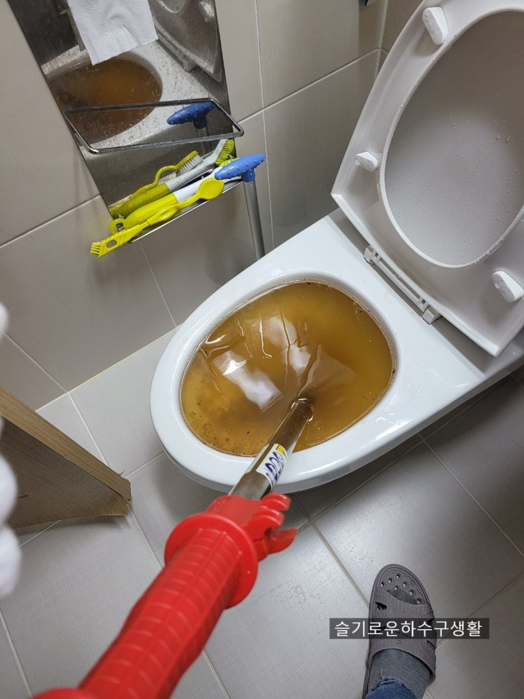
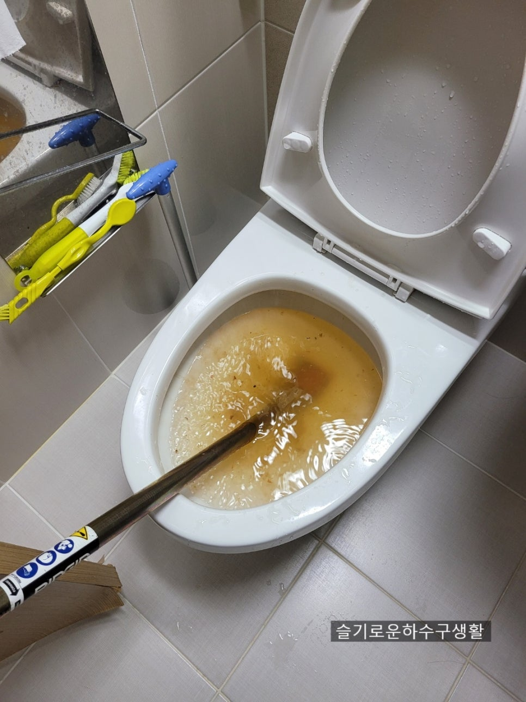
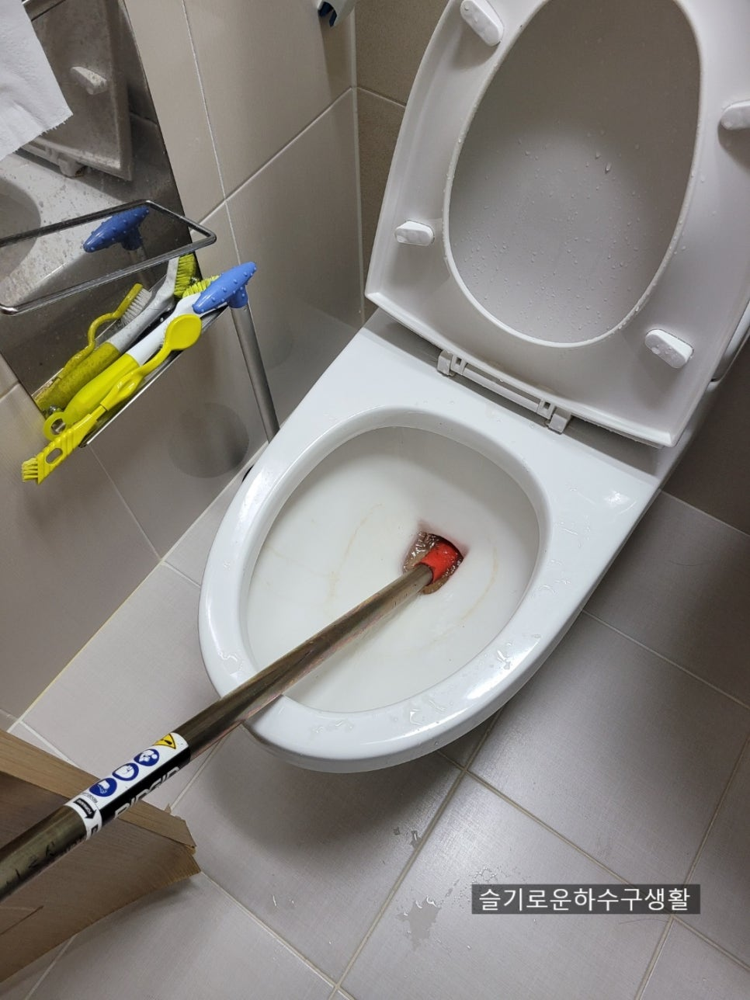
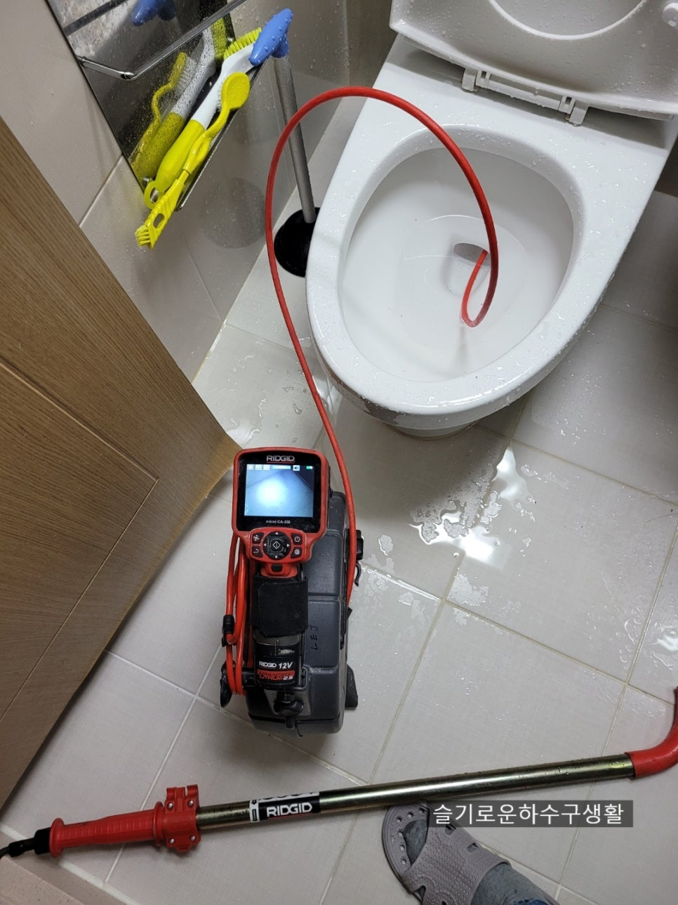
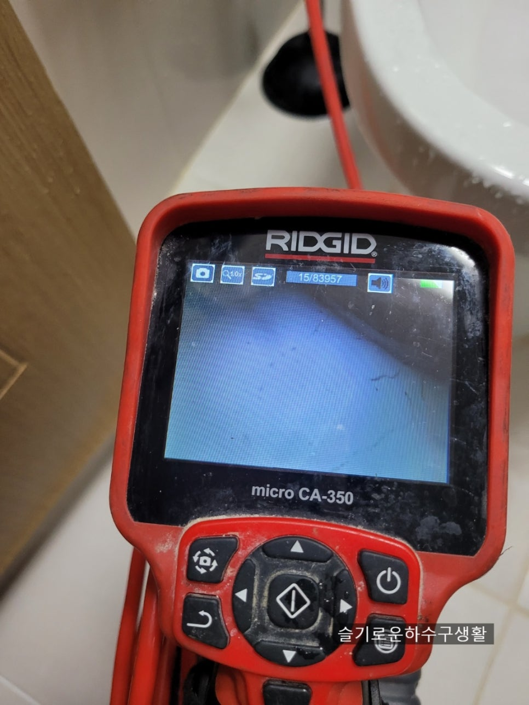
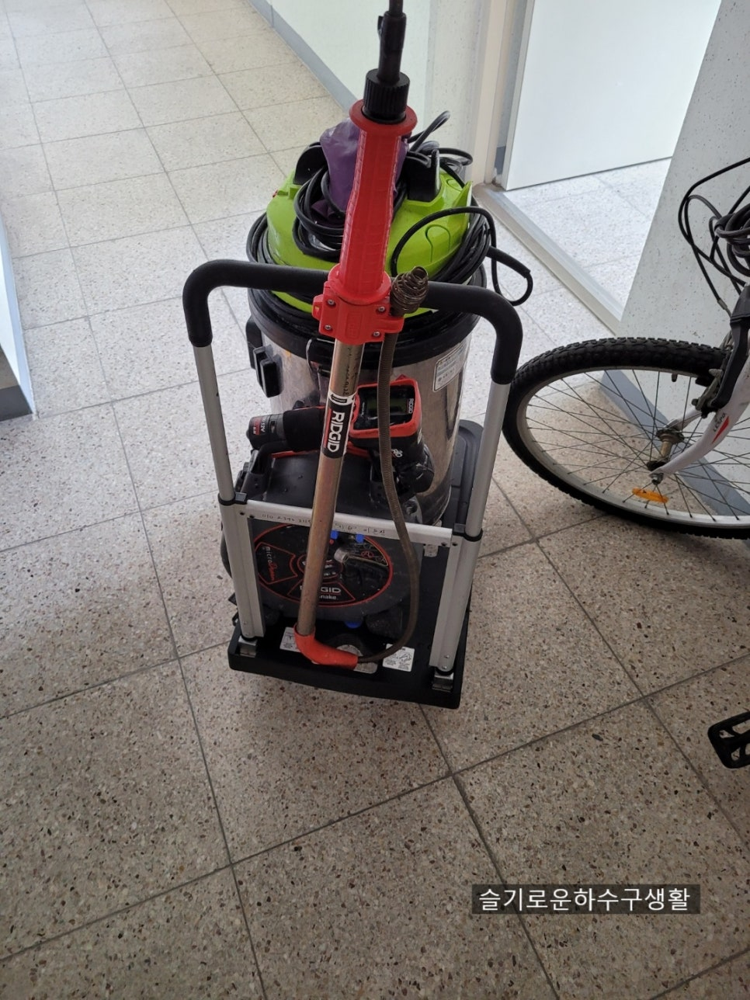

🏠 변기 막힘 해결 이물질 제거
서울 변기막힘 전문 시공 후기

📋 작업 개요
- 위치: 서울
- 서비스 유형: 변기막힘, 하수구막힘, 배관막힘, 뚫는업체
- 작업 일시: 2021. 6. 6. 23:56
- 업체명: 하수구수사대 (010-5615-2118)
🔍 문제 상황
안녕하세요 "하수구 수사대"
인사드립니다.
오늘은 일요일이지만 하수구 수사대는
여러분들의 불편함을 해결하고자
오늘도 열심히 달렸습니다.
변기 막힘 해결을 위해
고객 여러분도 이 방법
저 방법 많이 해보시다가
정 안되면 전문 업체를 찾는 게
대부분입니다.
간단하게 셀프로 뚫리는 일도
많지만 이물질이 들어갔다거나
변이 딱딱하여 변기 배관
밖으로 나가지 않는다면
뚫기가 쉽지 않죠.
변기 막힘
고객님 집에 도착해보니
물이 전혀 내려가지 않고 있습니다.
변이나 휴지가 뭉쳐서
물길을 꽉 막고 있는 듯
합니다.
서울/경기/인천
하수구 수사대
010-2340-2118
관통기 작업
우선 통수부터 시키기

🔎 원인 분석
💡 전문가 진단: 서울/경기/인천하수구 수사대010-2340-2118
위해 관통기 장비를 넣고
있습니다.
물이 서서히 빠지는 중
관통기를 넣고 얼마 후
물이 빠지기 시작합니다.
변기 막힘의 원인의 물질이
밀려 나가서 가득 차있던
물이 서서히 빠지고 있습니다.
물이 모두 빠짐
물이 모두 빠졌습니다.
한두 번 물을 더 내려
잘 빠지는지 확인도 해줍니다.
관통기 장비를 빼내어보니
별다른 이물질은 없는 걸로 보아
단순 막힘으로 어렵지 않게
끝이 났습니다.
그래도 "하수구 수사대"는
확실한 작업을 원하기 때문에
내시경 검수를 합니다.
간혹 물은 내려갔지만
변기 안에 이물질이 남아있다면
변을 보거나 휴지를 넣으면
변기 막힘 증상이 반복되어
나타날 수 있기 때문입니다.
내시경 검수
내시경으로 확은 보니

🔧 작업 과정
깨끗하게 제거되었습니다.
변기 막힘 해결 후 테스트
영상입니다.
완벽하게 해결되었습니다^^
두 번째 현장 방문
변기 막힘 해결을 위해 또 다른
현장으로 출동합니다.
고객과 통화를 하였는데
변기에 음식물이 조금 들어갔다고
하는데 어떻게 막혔는지
궁금해지네요^^
도착해보니 고객님께서
여러 가지 도구와 방법으로
변기 막힘 해결을 하시려고
긴 시간과 비용을 들였다는 게
현장에서 느껴집니다.
음식물이 들어간 경우
대부분 변기 깊숙한 곳까지
들어가기 때문에 빼내기가
쉽지 않습니다.
우선 내시경으로 어떻게
막혔는지 판단을 해봅니다.
사진으로 보다 음식물보다는
다른 이물질이 구멍을
완전히 막고 있습니다.
석션 작업
다행히 깊숙이 넣어가지
못하고 넘어가기 직전에
이물질이 걸려있어 석션 작업으로
빼내기로 하였습니다.
이물질 제거
변기 막힘 원인 바로 병뚜껑이네요.
어떻게 병뚜껑이
들어갔는지 이상할 정도로
화장실에서는 보기 힘든
병뚜껑이네요 ㅋㅋ
이물질을 제거하였으니
내시경으로 봐야겠죠?^^
고객님께서 2시간 동안
변기와 씨름을 했다고 하시는데
그럴만하네요.
병뚜껑이 끼어서 나가지도


✅ 작업 완료
나오지도 못하는 상황인데
고객님은 밀어서 내보내려고만
하셨다고 하시면서
역시 전문가는 다르다고 하시네요^^
변기 막힘 해결!! 이물질 제거!!
완벽하게 해결하였습니다.
저희 하수구 수사대는
서울 경기 인천 전 지역에서
활동을 하고 있으니
각종 막힘 해결을 원하시면
연락 주십시오^^




⚠️ 하수구 배관 막힘 예방 및 관리 가이드
- ✅ 머리카락, 비닐, 물티슈 등 물에 분해되지 않는 이물질은 하수구 유입을 절대 금지해 주세요.
- ✅ 하수구 거름망을 씌우고 모여진 이물질은 주기적으로 쓰레기통에 바로 비워주셔야 합니다.
- ✅ 배관 노후가 심할 경우 이물질이 더 쉽게 걸리므로 주기적인 배관 세척(고압세척 등)을 권장합니다.
- ✅ 작업 후 1년 이내 재발 시 하수구수사대에서 무상 A/S 보증 서비스를 제공합니다.
💡 핵심 정리
- 확실한 장비 작업(내시경 점검 및 샤프트 스케일링)으로 원인을 뿌리 뽑습니다.
- 작업 후 1년 이내에 동일한 부위 재발 시 100% 무상 A/S 서비스를 보장합니다.
- 서울 · 경기 · 인천 전 지역에 24시간 언제든 긴급 출동할 수 있도록 항시 대기 중입니다.
❓ 자주 묻는 질문 (FAQ)
🚨 서울 변기막힘 문제로 고민이신가요?
정확한 원인 진단과 확실한 시공으로 재발 없는 해결을 약속드립니다.
24시간 긴급 출동 | 서울 · 경기 · 인천 전지역 | 1년 내 재발 시 무상 A/S